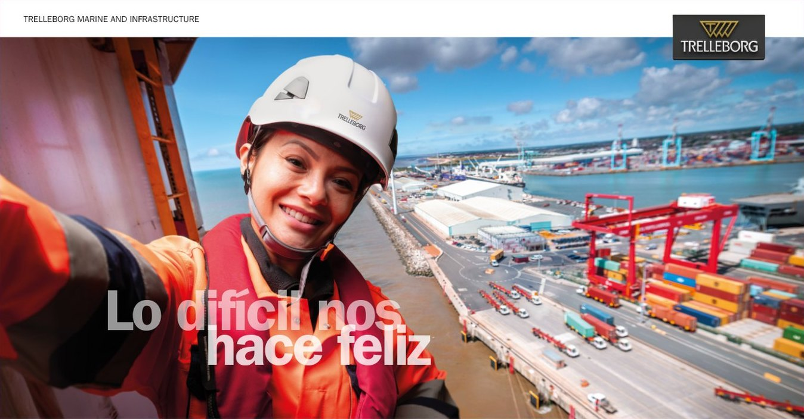

Latin America: one programme for our local team and partner agents.
Brazil, Chile, Peru, Colombia, Mexico, Argentina and Paraguay, across four buyer segments. I ran it as a market entry rather than an adaptation of the English material: research first, then Spanish and Portuguese originals built for how our local sales team and the agents who support them sell in each market. It launched on schedule.
- 7 markets
- 4 buyer segments
- Spanish + Portuguese originals
- Eloqua nurture
- Sales toolkit
- Most cost-efficient awareness on the account